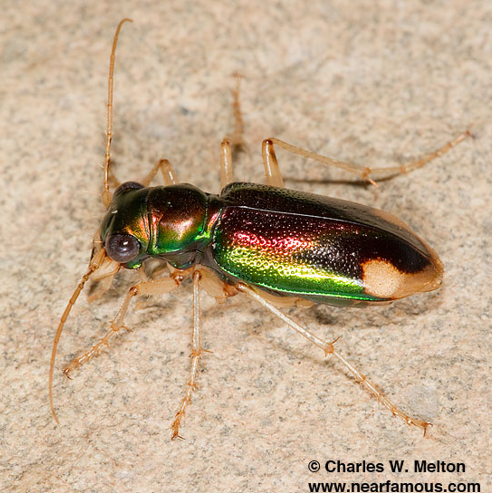

Es un escarabajo tigre de tamaño mediano, generalmente entre 13 y 15 mm de longitud. Presenta una coloración verde metálica con reflejos rojizos en la cabeza, el pronoto y los élitros. Posee ojos grandes, mandíbulas fuertes y patas largas que le permiten desplazarse rápidamente. Es un depredador activo de pequeños insectos y suele encontrarse en terrenos húmedos y zonas cercanas a cuerpos de agua.